Rows: 526
Columns: 24
$ wage <dbl> 3.10, 3.24, 3.00, 6.00, 5.30, 8.75, 11.25, 5.00, 3.60, 18.18,…
$ educ <int> 11, 12, 11, 8, 12, 16, 18, 12, 12, 17, 16, 13, 12, 12, 12, 16…
$ exper <int> 2, 22, 2, 44, 7, 9, 15, 5, 26, 22, 8, 3, 15, 18, 31, 14, 10, …
$ tenure <int> 0, 2, 0, 28, 2, 8, 7, 3, 4, 21, 2, 0, 0, 3, 15, 0, 0, 10, 0, …
$ nonwhite <int> 0, 0, 0, 0, 0, 0, 0, 0, 0, 0, 0, 0, 0, 0, 0, 0, 0, 0, 0, 0, 0…
$ female <int> 1, 1, 0, 0, 0, 0, 0, 1, 1, 0, 1, 1, 0, 0, 0, 0, 1, 1, 1, 1, 1…
$ married <int> 0, 1, 0, 1, 1, 1, 0, 0, 0, 1, 0, 0, 1, 0, 1, 1, 1, 0, 1, 1, 0…
$ numdep <int> 2, 3, 2, 0, 1, 0, 0, 0, 2, 0, 0, 0, 2, 0, 1, 1, 0, 0, 3, 0, 0…
$ smsa <int> 1, 1, 0, 1, 0, 1, 1, 1, 1, 1, 1, 1, 1, 1, 1, 1, 1, 1, 1, 1, 1…
$ northcen <int> 0, 0, 0, 0, 0, 0, 0, 0, 0, 0, 0, 0, 0, 0, 0, 0, 0, 0, 0, 0, 0…
$ south <int> 0, 0, 0, 0, 0, 0, 0, 0, 0, 0, 0, 0, 0, 0, 0, 0, 0, 0, 0, 0, 0…
$ west <int> 1, 1, 1, 1, 1, 1, 1, 1, 1, 1, 1, 1, 1, 1, 1, 1, 1, 1, 1, 1, 1…
$ construc <int> 0, 0, 0, 0, 0, 0, 0, 0, 0, 0, 0, 0, 0, 0, 0, 0, 0, 0, 0, 0, 0…
$ ndurman <int> 0, 0, 0, 0, 0, 0, 0, 0, 0, 0, 0, 0, 0, 0, 0, 0, 0, 0, 0, 0, 0…
$ trcommpu <int> 0, 0, 0, 0, 0, 0, 0, 0, 0, 0, 0, 0, 0, 0, 0, 0, 0, 0, 0, 0, 0…
$ trade <int> 0, 0, 1, 0, 0, 0, 1, 0, 1, 0, 1, 0, 0, 0, 0, 0, 0, 0, 0, 0, 0…
$ services <int> 0, 1, 0, 0, 0, 0, 0, 0, 0, 0, 0, 0, 0, 0, 0, 0, 0, 0, 0, 0, 0…
$ profserv <int> 0, 0, 0, 0, 0, 1, 0, 0, 0, 0, 0, 1, 0, 0, 0, 1, 0, 1, 0, 1, 1…
$ profocc <int> 0, 0, 0, 0, 0, 1, 1, 1, 1, 1, 1, 0, 0, 0, 1, 1, 0, 1, 0, 0, 1…
$ clerocc <int> 0, 0, 0, 1, 0, 0, 0, 0, 0, 0, 0, 1, 0, 0, 0, 0, 1, 0, 0, 0, 0…
$ servocc <int> 0, 1, 0, 0, 0, 0, 0, 0, 0, 0, 0, 0, 0, 0, 0, 0, 0, 0, 0, 1, 0…
$ lwage <dbl> 1.1314021, 1.1755733, 1.0986123, 1.7917595, 1.6677068, 2.1690…
$ expersq <int> 4, 484, 4, 1936, 49, 81, 225, 25, 676, 484, 64, 9, 225, 324, …
$ tenursq <int> 0, 4, 0, 784, 4, 64, 49, 9, 16, 441, 4, 0, 0, 9, 225, 0, 0, 1…Clase 6: Regresión Lineal Simple
Análisis de Datos y Estadística Computacional
Prof. Gabriel Duarte Zúñiga
Universidad Adolfo Ibáñez | DIAPP-2026
4 de julio de 2026
¡Bienvenid@s a la Clase 6!
Objetivos Clase 6
En esta clase aprenderemos a estimar cuantitativamente la relación entre dos variables usando un modelo de regresión lineal simple. Los modelos de regresión lineal son una de las herramientas fundamentales dentro de la econometría aplicada.
Los objetivos específicos de esta clase son:
- Entender el proceso de ir de una pregunta de interés a un modelo econométrico.
- Estimar una regresión con
lm()e interpretar sus resultados. - Comprender por qué el método de estimación de Mínimos Cuadrados Ordinarios (MCO u OLS en inglés) tiene propiedades deseables y cuáles son las condiciones que lo aseguran (Teorema Gauss-Markov).
- Interpretar coeficientes \(\beta\), \(R^2\) y significancia estadística.
- Distinguir correlación de causalidad.
De la pregunta al modelo
¿Qué es la econometría?
La econometría desarrolla métodos estadísticos para estimar relaciones económicas, probar teorías y evaluar e implementar políticas públicas mediante datos (Wooldridge 2020).
-
Algunas preguntas que la econometría puede ayudar a responder:
- ¿Cuál es el retorno salarial de un año más de educación?
- ¿Qué efecto tiene un aumento del salario mínimo sobre el empleo?
- ¿Un aumento de la dotación policial reduce los delitos?
Aclaración importante
A diferencia de los experimentos controlados, la econometría trabaja principalmente con datos observacionales, en donde el investigador no controla la asignación de las variables. Una de las implicancias de esto, es que para distinguir entre asociaciones de variables y causalidad, se requieren métodos econométricos específicos.
De la pregunta al modelo: 3 pasos
Para aplicar un modelo econométrico y extraer conclusiones de la relación entre las variables de un conjunto de datos, es recomendable seguir los siguientes pasos:
1. Formular la pregunta de interés:
Ej: ¿Cuál es el efecto de un año adicional de educación en el salario de una persona?
2. Especificar un modelo econométrico: Una vez definida la pregunta de interés, es importante pensar en las variables que permiten la relación y estimación del objetivo de estudio
\[wage = \beta_0 + \beta_1 \cdot educ + u\]
Donde \(u\) recoge todo lo que no observamos (habilidad, motivación, etc.).
3. Estimar el modelo con datos y contrastar hipótesis.
\[H_0:\beta = 0\\ H_1:\beta \neq 0 \]
Resumen
El orden recomendado para iniciar una investigación cuantitativa empírica es: pregunta → modelo → datos → estimación → interpretación.
Tipos de datos
| Tipo | Descripción | Ejemplo |
|---|---|---|
| Corte transversal | Observaciones en un momento del tiempo | Encuesta CASEN 2024 |
| Serie de tiempo | Una unidad observada en múltiples períodos | PIB trimestral de Chile |
| Corte transversal combinado | Muestras distintas en distintos períodos | CASEN 2022 + 2024 |
| Panel (longitudinal) | Las mismas unidades seguidas en el tiempo | Estudio Longitudinal Social de Chile (ELSOC) |
Tipos de datos
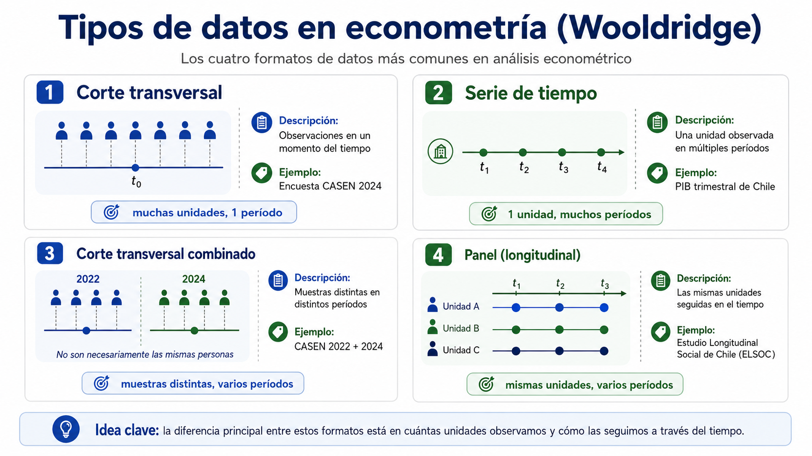
Elaborado con IA en función de la tabla resumen en base a (Wooldridge 2020)
Nota
En este curso trabajaremos principalmente con datos de corte transversal. Una de sus ventajas es que, bajo ciertas condiciones, podemos asumir que los datos fueron obtenidos mediante un muestreo aleatorio.
Dataset de ejemplo: wage1 (Wooldridge 2020)
526 trabajadores estadounidenses con información sobre salario, educación, experiencia y características demográficas:
Variables principales de wage1
| Variable | Descripción |
|---|---|
wage |
Salario por hora (USD de 1976) |
educ |
Años de educación formal |
exper |
Años de experiencia laboral |
tenure |
Años en el empleo actual |
female |
1 si es mujer, 0 si es hombre |
nonwhite |
1 si no es blanco, 0 si es blanco |
lwage |
Logaritmo natural del salario |
Exploración visual
¿Se ve una relación entre educación y salario?
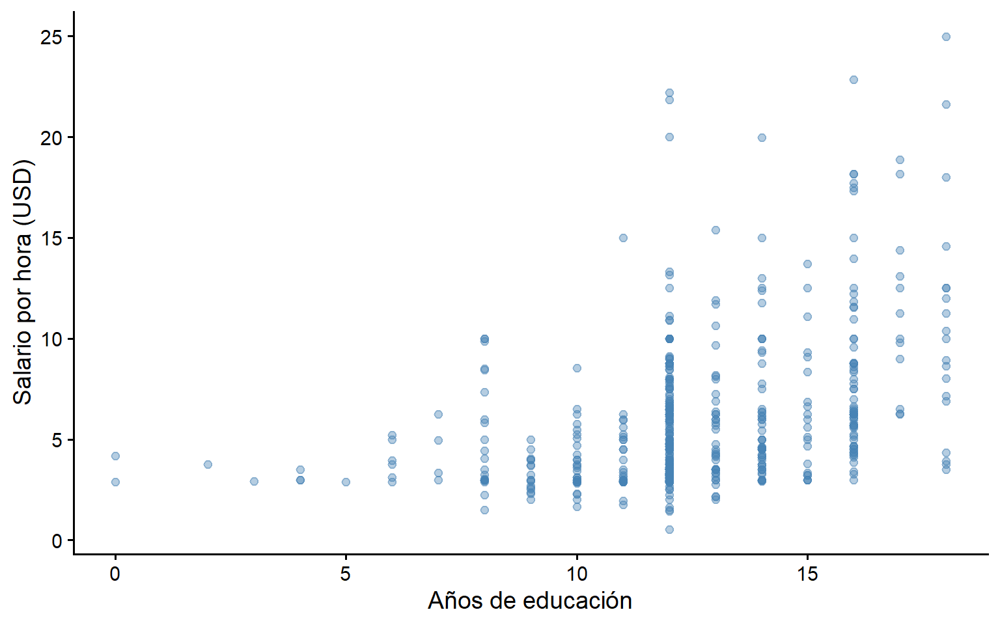
Parece haber una tendencia positiva, pero con mucha dispersión. ¿Podemos cuantificar esa relación?
Exploración visual
Si ajustamos una recta se ve más clara la relación, pero ¿cómo obtenemos esta recta?
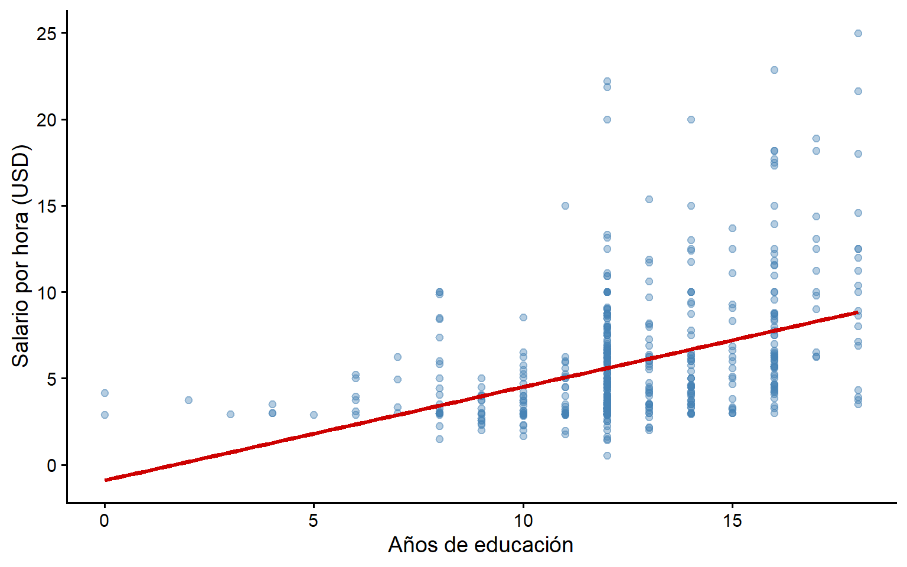
La recta de mejor ajuste: MCO
Ecuación de la recta
- ¿Recuerdan la ecuación de la recta que vieron en clases de matemáticas?
\[y = mx + n\]
donde \(m\) es la pendiente de la recta y \(b\) es el intercepto (donde corta la recta en el eje y). Por ejemplo:
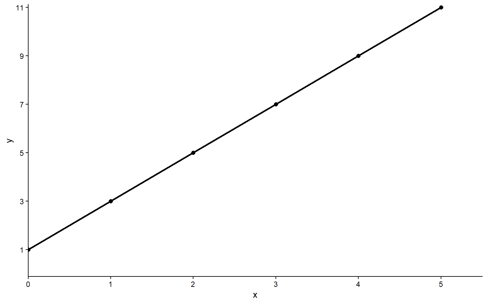
\[y = 2x + 1\] con \(m=2\) y \(n=1\)
Una comparación útil
Clase de matemáticas:
\(y = n + mx\)
\(n\) es el intercepto en el eje
\(m\) es la pendiente
Clase de econometría:
\(\hat{y} = \hat{\beta}_0 +\hat{\beta}_1x + \hat{\mu}\)
\(\hat{\beta}_0\) es el intercepto en el eje x
\(\hat{\beta}_1\) es la pendiente
\(\hat{u}\) es el residuo o la diferencia entre lo observado y lo estimado: \(\hat{u} = y_i - \hat{y_i}\)
\(\hat{\beta}_0\) y \(\hat{\beta}_1\) se conocen también como coeficientes de regresión y serán nuestros parámetros a estimar.
\(\hat{y}\) lo denominamos como los valores ajustados, o bien, los valores estimados por nuestra función para cada valor posible de \(x\).
Definición del modelo de regresión simple
Si contamos con dos variables (\(x\) e \(y\)) y estamos interesados en explicar \(y\) en términos de \(x\), o bien, como varía \(y\) cuando \(x\) cambia, un modelo de regresión lineal simple nos puede ayudar a formalizar el planteamiento de este problema matemáticamente y estimar un parámetro (\(\beta_1\)) que describa esta relación:
\[y = \beta_0 + \beta_1x + \mu\] Donde \(\beta_0\) es el intercepto, \(\beta_1\) la pendiente y \(\mu\) el término de error que representa todos los factores distintos de \(x\) que afectan a \(y\). En este sentido, el término de error (\(\mu\)) también se conoce como inobservable.
- Notar que el modelo de regresión anterior es un modelo poblacional o teórico: describe la relación entre \(x\) e \(y\) en la población. Sin embargo, en la práctica no conocemos los valores reales de \(\beta_0\) ni de \(\beta_1\), por lo que debemos estimarlos.
Valores predichos \(\hat{y}\) y residuos \(\hat{u}\)
- En la práctica, dado que solo observamos una muestra de datos, estimamos una recta que describa nuestra “mejor predicción” para \(y\) dado los valores de \(x\). Asumiendo que \(E(\mu) = 0\) y que \(Cov(x,\mu) = 0\) tenemos que:
\[\hat{y} = \hat{\beta}_0 + \hat{\beta}_1x\]
donde \(\hat{y}\) representa el valor de \(y\) predicho o ajustado por el modelo para cada valor de \(x\).
- Algo similar ocurre con el error y el residuo. En el modelo poblacional, \(\mu\) representa el error verdadero, es decir, todos los factores no observados que afectan a \(y\). Pero como no conocemos la relación verdadera, tampoco observamos directamente \(\mu\), mientras que en la muestra, lo que sí podemos calcular es el residuo:
\[\hat{u} = y - \hat{y}\]
Es decir, el residuo mide cuánto se “equivoca” la recta estimada al predecir cada observación.
En simple
\(y\) es el valor observado, mientras que \(\hat{y}\) es el valor que predice la recta estimada. Por otro lado, \(\mu\) es el error verdadero pero no observable; \(\hat{u}\) es el error que observamos después de estimar el modelo, es decir, la diferencia entre el dato real y lo que predice la recta.
¿Cómo estimamos la mejor recta?
Podríamos trazar infinitas rectas a través de la nube de puntos, cuya pendiente sería una estimación de la relación entre \(y\) y \(x\). El método de mínimos cuadrados ordinarios (MCO u OLS) elige la que minimiza la suma de los residuos al cuadrado:
\[\min \sum_{i=1}^{n} \hat{u}_i^2 = \min \sum_{i=1}^{n} (y_i - \hat{y}_i)^2\]
Residuos de manera visual
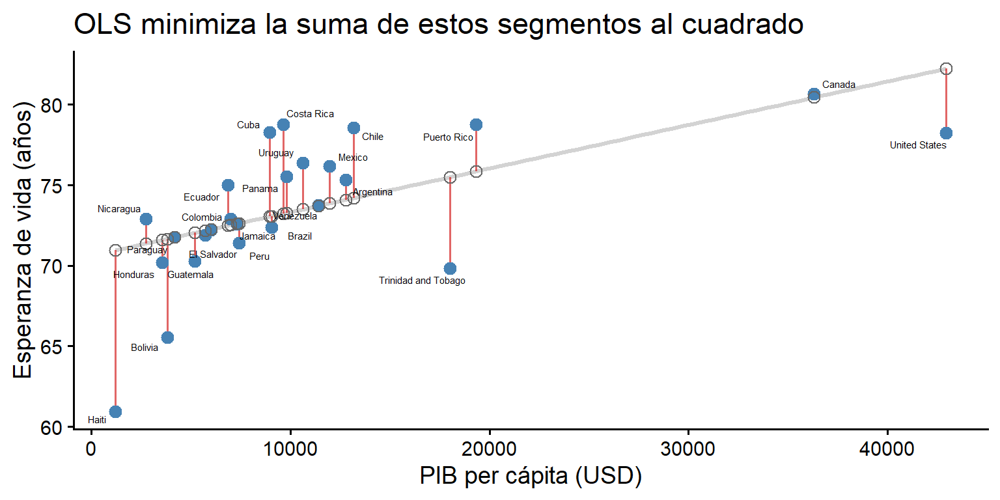
Los segmentos rojos son los residuos (\(\hat{u}_i\)): la distancia entre cada punto observado (●) y su valor predicho sobre la recta (○).
¿Por qué esa pendiente y no otra?
Una forma alternativa de entender MCO es pensar que este método prueba todas las rectas posibles y elige la que produce la menor suma de residuos al cuadrado (SSR). Observemos cómo cambia la suma de residuos al cuadrado (SSR) a medida que la recta ajustada varía:
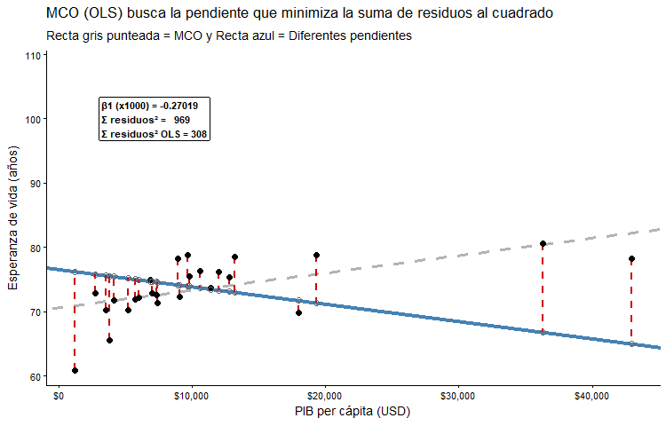
En simple
La recta se “estabiliza” en la pendiente que minimiza la SSR. Cualquier otra recta produce una suma de residuos al cuadrado más grandes.
Modelo de Regresión Lineal Simple (Resumen)
Objetivo: El modelo de regresión simple puede utilizarse para estudiar la relación entre dos variables.
Si queremos explicar una variable \(y\) en términos de \(x\), es decir, analizar cómo varía \(y\) cuando varía \(x\), el siguiente modelo de regresión puede ayudarnos a realizarlo (Heiss 2020): \[y = \beta_0 +\beta_1x+\mu\]
Se llama simple porque solo buscamos explicar \(y\) a través de una sola variable \(x\). Si utilizamos más variables explicativas(2 o más) lo llamaremos modelo de regresión múltiple.
Estimador de \(\beta_0\): \[\hat{\beta_0} = \bar{y} - \hat{\beta_1}\bar{x}\]
- Estimador de \(\beta_1\): Corresponde a la covarianza dividido en la varianza de x \[\hat{\beta_1} =\rho_{xy}\times(\frac{\sigma_y}{\sigma_x}) = \frac{Cov(x,y)}{Var(x)}\]
-
¿Cómo lo implementamos en R?: Utilizando la función
lm()(linear model del paquetestatsque viene cargado por defecto).
Primera regresión en R
- Para estimar los parámetros de una regresión lineal mediante MCO utilizamos la función
lm()(linear model), especificando al menos los siguientes argumentos:-
formula: Para especificar la variable dependiente \(y\) junto con la o las variable(s) explicativa(s) \(x\) debemos escribir:
y~x. - data: debemos indicar el nombre del objeto o dataset sobre el cual haremos la regresión (importante fijarse en el formato en que se encuentre)
-
formula: Para especificar la variable dependiente \(y\) junto con la o las variable(s) explicativa(s) \(x\) debemos escribir:
- Con la función
summary()podemos imprimir un resumen de los principales resultados de la regresión:
Primera regresión en R
Call:
lm(formula = wage ~ educ, data = wage1)
Residuals:
Min 1Q Median 3Q Max
-5.3396 -2.1501 -0.9674 1.1921 16.6085
Coefficients:
Estimate Std. Error t value Pr(>|t|)
(Intercept) -0.90485 0.68497 -1.321 0.187
educ 0.54136 0.05325 10.167 <2e-16 ***
---
Signif. codes: 0 '***' 0.001 '**' 0.01 '*' 0.05 '.' 0.1 ' ' 1
Residual standard error: 3.378 on 524 degrees of freedom
Multiple R-squared: 0.1648, Adjusted R-squared: 0.1632
F-statistic: 103.4 on 1 and 524 DF, p-value: < 2.2e-16¿Qué Tipo de Objeto Entrega lm?
[1] "coefficients" "residuals" "effects" "rank"
[5] "fitted.values" "assign" "qr" "df.residual"
[9] "xlevels" "call" "terms" "model" -
lmentrega una lista de objetos que guardan distintos valores. En particular, los objetos que más nos interesan son los siguientes:-
coefficients: Representa los coeficientes estimados de la regresión. Se pueden extraer con la función
coef(reg_mtcars) -
residuals: Entrega los residuos de la estimación. Se pueden extraer con la función
resid(reg_mtcars) -
fitted.values: Representa los valores predichos (las estimaciones en la variable dependiente) que conforman la recta de regresión. Se pueden extraer con la función
fitted(reg_mtcars)
-
coefficients: Representa los coeficientes estimados de la regresión. Se pueden extraer con la función
¿Cómo se visualiza lo anterior?
Ahora entendemos de dónde proviene la recta que estimamos en la clase 3 con geom_smooth(method = 'lm'):
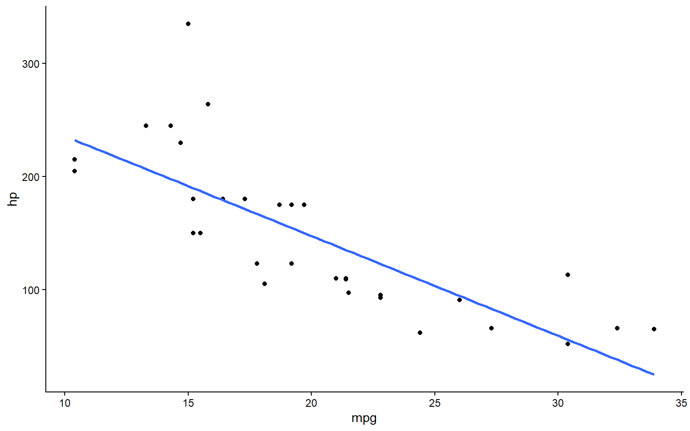
¿Cómo resumir en una tabla los resultados?
Esto se puede hacer de varias formas, pero por ahora veremos 4:
- Con la función
summary()(paquete base). Esta es la más básica y resume los valores más importantes al momento de analizar los resultados de una regresión - Con la función
tidy()del paquetebroom. Esto permite generar un tabla de resultados en formato tidy como hemos visto en clases anteriores del parámetro estimado, su error estándar, su estadístico t y su valor-p - Con la función
glance()también del paquetebroom. Esta función entrega otras estadísticas que son interesantes de analizar como el \(R^2\) que explicaremos más adelante. - Con la función
get_regression_table()del paquetemoderndive. Está basada en la funcióntidypero agrega más información relevante para el análisis
¿Cómo interpretar los resultados de los coeficientes?
Estimate: Los coeficientes estimados para cada variable. Indican la cantidad de cambio en la variable de respuesta por unidad de cambio en la variable predictora, manteniendo constantes otras variables (ceteris paribus).
Std. Error: El error estándar del coeficiente. Proporciona una medida de la variabilidad de la estimación del coeficiente.
\(t\) value: El valor t para la prueba de hipótesis de que el coeficiente es igual a cero. Se calcula como el coeficiente dividido por su error estándar.
\(Pr(>|t|)\): El p-valor asociado con el valor t. Indica la probabilidad de observar un valor \(t\) tan extremo como el observado (o más extremo) si la hipótesis nula es verdadera.
¿Cómo interpretar los valores-p?
-
Significancia (Asteriscos): Los asteriscos junto a los p-valores indican el nivel de significancia:
-
***: \(p < 0.001\) -
**: \(p < 0.01\) -
*: \(p < 0.05\) -
.: \(p < 0.1\) -
Sin asterisco: \(p ≥ 0.1\)
-
Los asteriscos son una forma rápida de identificar qué variables son estadísticamente significativas en el modelo.
En simple
Generalmente lo que buscamos es al hacer inferencia sobre los parámetros estimados es rechazar la hipótesis nula. Con valores-p pequeños (ej \(< .05\)), rechazamos la hipótesis nula de que el parámetro estimado es igual a 0. Con valores-p grandes (ej \(> .05\))), no se puede rechazar la hipótesis nula, por lo que no se cuenta con evidencia estadística suficiente de un efecto de la variable \(x\) sobre \(y\).
Extraer resultados con broom
El paquete broom convierte la salida de lm() en tibbles ordenados:
Tip
tidy() y glance() transforman la salida estándar de summary() en tibbles que podemos manipular con dplyr para filtrar, graficar, y todas las funciones que vimos en la unidad I.
Interpretar los coeficientes
Del modelo \(\widehat{wage} = \hat{\beta}_0 + \hat{\beta}_1 \cdot educ\):
# A tibble: 2 × 7
term estimate std_error statistic p_value lower_ci upper_ci
<chr> <dbl> <dbl> <dbl> <dbl> <dbl> <dbl>
1 intercept -0.905 0.685 -1.32 0.187 -2.25 0.441
2 educ 0.541 0.053 10.2 0 0.437 0.646Nota
\(\hat{\beta}_1\) = 0.541: por cada año adicional de educación, el salario por hora aumenta en promedio 0.54 USD (de 1976).
-
\(\hat{\beta}_0\) = -0.905: el salario estimado cuando
educ = 0. En este caso no tiene una interpretación práctica útil ya que no se puede recibir un salario laboral negativo.
Unidades de medición y formas funcionales
Cuando se multiplica la variable dependiente por una constante \(c\) (lo que significa multiplicar cada valor de la muestra por \(c\)), entonces las estimaciones de MCO del intercepto y de la pendiente también son multiplicadas por \(c\).
La bondad de ajuste (\(R^2\)) del modelo no depende de las unidades de medición de las variables.
En el modelo log/nivel, \(100*\beta_1\) entrega la semielasticidad de y respecto a x, mientras que el log/log \(\beta_1\) corresponde a la elasticidad.
A continuación se resumen la formas funcionales en donde se ocupan logaritmos y su interpretación.
Unidades de medición y formas funcionales
| Modelo | Ecuación | Interpretación |
|---|---|---|
| Lineal-Lineal | \(Y=\beta_0+\beta X\) | Un cambio de una unidad en \(X\) esta asociado con un cambio de \(\beta\) unidades en \(Y\) |
| Log-Lineal | \(log(Y)=\beta_0+\beta X\) | Un cambio de una unidad en \(X\) esta asociado con un cambio de \((100*\beta)\%\) en \(Y\) |
| Lineal-Log | \(Y=\beta_0+\beta log(X)\) | Un cambio de 1% en \(X\) esta asociado con un cambio de \(\frac{\beta}{100}\) unidades en \(Y\) |
| Log-Log | \(log(Y)=\beta_0+\beta log(X)\) | Un cambio de 1% en \(X\) esta asociado con un cambio de \(\beta\%\) en \(Y\) |
A continuación, se presenta un ejemplo de interpretación con los datos ceosal1 del paquete wooldridge:
Un mismo dataset, cuatro formas funcionales
Para comparar las cuatro formas funcionales usaremos hprice1 (Wooldridge 2020): 88 viviendas con su precio de venta y superficie construida.
price sqrft lprice lsqrft
1 300 2438 5.703783 7.798934
2 370 2076 5.913503 7.638198
3 191 1374 5.252274 7.225482
4 195 1448 5.273000 7.277938-
price: precio de venta, en miles de USD -
sqrft: superficie construida, en pies cuadrados -
lprice,lsqrft: sus logaritmos naturales, ya calculados en el dataset
1. Nivel-Nivel: ¿en cuántos USD cambia el precio?
# A tibble: 2 × 5
term estimate std.error statistic p.value
<chr> <dbl> <dbl> <dbl> <dbl>
1 (Intercept) 11.2 24.7 0.453 6.52e- 1
2 sqrft 0.140 0.0118 11.9 8.42e-20Nota
\(\hat{\beta}_1 =\) 0.14: cada pie cuadrado adicional de construcción se asocia, en promedio, a un aumento de $140 en el precio de la vivienda (recordar que price está en miles de USD). Este efecto en dólares es el mismo para una casa chica que para una grande.
2. Log-Nivel: ¿en qué % cambia el precio?
# A tibble: 2 × 5
term estimate std.error statistic p.value
<chr> <dbl> <dbl> <dbl> <dbl>
1 (Intercept) 4.82 0.0766 63.0 1.00e-73
2 sqrft 0.000402 0.0000366 11.0 4.80e-18Nota
\(\hat{\beta}_1 =\) 4^{-4}. Multiplicando por 100, cada pie cuadrado adicional aumenta el precio en un \(0.04\%\) aprox. Como esta cifra es difícil de leer, conviene expresarla para un cambio más intuitivo de \(X\): cada 100 pies cuadrados adicionales aumentan el precio en aproximadamente 4%.
3. Nivel-Log: ¿qué pasa si \(X\) cambia en %?
# A tibble: 2 × 5
term estimate std.error statistic p.value
<chr> <dbl> <dbl> <dbl> <dbl>
1 (Intercept) -1962. 214. -9.15 2.43e-14
2 lsqrft 298. 28.3 10.5 3.95e-17Nota
\(\hat{\beta}_1 =\) 297.91. Dividiendo por 100: un aumento de 1% en la superficie construida se asocia a un aumento de $2.979 en el precio de la vivienda. Este modelo es útil cuando esperamos que cambios porcentuales similares en \(X\) (y no cambios de una unidad) produzcan efectos parecidos en \(Y\).
4. Log-Log: la elasticidad
# A tibble: 2 × 5
term estimate std.error statistic p.value
<chr> <dbl> <dbl> <dbl> <dbl>
1 (Intercept) -0.975 0.641 -1.52 1.32e- 1
2 lsqrft 0.873 0.0846 10.3 1.05e-16Nota
\(\hat{\beta}_1 =\) 0.873 es la elasticidad del precio respecto a la superficie: un aumento de 1% en los pies cuadrados se asocia a un aumento de 0.87% en el precio. Como es menor a 1, decimos que el precio de la vivienda es inelástico respecto a la superficie (aumenta menos que proporcionalmente).
🧠 Pregunta N° 1
Estimamos lm(wage ~ educ) y obtenemos \(\hat{\beta}_1 = 0.54\). ¿Cuál es la interpretación correcta?
Seleccione la opción correcta
- Las personas con más educación ganan $0.54 USD más que las que no tienen educación
- Por cada año adicional de educación, el salario por hora aumenta en promedio $0.54 USD
- El 54% de la variabilidad del salario se explica por la educación
- Si una persona estudia 0.54 años más, su salario se duplica
💻 Ejercicio Aplicado 1: Coeficientes estimados
Usando gapminder (año 2007), estime la relación entre la esperanza de vida (lifeExp) como variable dependiente y el PIB per cápita (gdpPercap) como variable explicativa. ¿Cuánto aumenta la esperanza de vida por cada $1.000 USD adicionales de PIB per cápita?
Bondad de ajuste: \(R^2\)
- La bondad de ajuste es una medida que permite resumir qué tan bien el modelo de regresión describe los datos observados, es decir, qué tan bien la variable \(x\) explica a la variable dependiente \(y\).
- El R² indica qué proporción de la variabilidad de \(Y\) es explicada por el modelo.
- Va de 0 (no explica nada) a 1 (explica toda la variabilidad).
- En
Rpodemos acceder de manera rápida a este valor con la funciónglance():
Nota
Un \(R^2\) de 0.165 significa que la educación por sí sola explica solo el 16.5% de la variabilidad del salario. El resto se debe a otros factores no incorporados al modelo (experiencia, sector, habilidades, etc.).
Advertencia
Un \(R^2\) bajo no significa que el modelo sea inútil. Significa que hay muchos otros factores que influyen en \(Y\). En ciencias sociales, \(R^2\) de 0.10–0.30 pueden seguir siendo útiles.
Bondad de Ajuste
Para entender matemáticamente cómo se calcula el \(R^2\) tenemos que considerar las siguientes medidas:
- Suma Total de Cuadrados (STC o SST): Es una medida de la variación muestral total en la variable dependiente \(y_i\), es decir, mide qué tan dispersos están las \(y_i\) en la muestra: \(\sum_{i=1}^{n}(y_i-\bar{y}_i)^2 = (n-1)*var(y)\)
- Suma Explicada de Cuadrados (SEC o SSE): Mide la variación muestral de los valores predichos \(\hat{y_i}\): \(\sum_{i=1}^{n}(\hat{y_i}-\bar{y}_i)^2 = (n-1)*var(\hat{y})\)
- Suma Residual de Cuadrados (SRC SSR): Mide la variación muestral de los residuos \(\hat{y_i}\): \(\sum_{i=1}^{n}(\hat{\mu_i}-\bar{y}_i)^2 = (n-1)*var(\hat{\mu})\)
La variación total de y puede expresarse como la suma de la variación explicada más la variación no explicada SRC: \(STC = SEC + SRC\)
De esta manera, el \(R^2\) queda definido como:
\[R^2 \equiv \frac{SEC}{STC} = 1 - \frac{SRC}{STC}\]
Cálculo del \(R^2\)
- Veamos el de nuestra regresión realizada para
modelo1con el dataset dewage1
Cálculo del \(R^2\)
- Si lo calculamos manualmente, podemos utilizar lo que ya sabemos que representa:
Recap: Visualizar la regresión
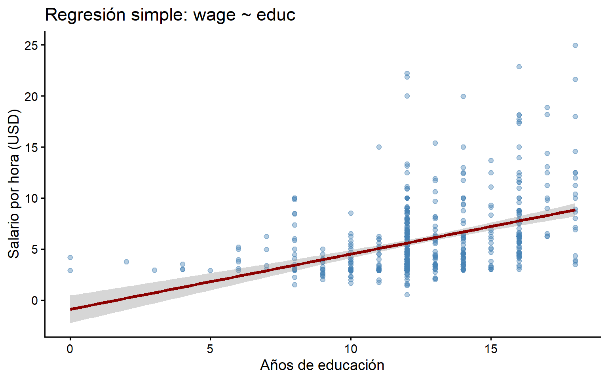
¿Por qué confiar en OLS?
Propiedades de MCO (Teorema Gauss-Markov)
Si se cumplen ciertos supuestos, MCO tiene las mejores propiedades que podemos pedir para un estimador lineal:
Teorema de Gauss-Markov
Entre todos los estimadores que son lineales e insesgados, MCO es el que tiene la menor varianza (Best Linear Unbiased Estimator).
En español: OLS no solo le “apunta” en promedio al valor correcto (es insesgado), sino que además es el que “apunta” con la menor dispersión posible (es eficiente).
Los 5 supuestos de Gauss-Markov
| # | Supuesto | ¿Qué significa en simple? |
|---|---|---|
| SLR.1 | Linealidad en parámetros | La relación puede escribirse como \(y = \beta_0 + \beta_1 x + u\) |
| SLR.2 | Muestreo aleatorio | Los datos fueron obtenidos aleatoriamente de la población |
| SLR.3 | Variación en \(X\) | La variable explicativa no es constante (ej: hay variación en educ) |
| SLR.4 | Media condicional cero | \(E(u|x) = 0\): los factores no observados no están correlacionados con \(X\) |
| SLR.5 | Homocedasticidad | \(Var(u|x) = \sigma^2\): la dispersión del error es la misma para todos los valores de \(X\) |
Advertencia
El supuesto más difícil de cumplir en la práctica es el SLR.4: si hay variables omitidas que afectan tanto a \(Y\) como a \(X\), el coeficiente \(\hat{\beta}_1\) estará sesgado. Esto se llama sesgo de variable omitida y es uno de los problemas centrales de la econometría.
Recap: Inferencia sobre los coeficientes
En la Clase 5 vimos cómo interpretar intervalos de confianza, valores-p y realizar pruebas de hipótesis. Ahora aplicamos la misma lógica a los coeficientes de la regresión:
- \(H_0: \beta_1 = 0\) → la educación no tiene efecto sobre el salario.
- \(H_A: \beta_1 \neq 0\) → la educación sí tiene efecto.
¿Es el efecto significativo?
- El p-value de
educes 2.782599e-22, mucho menor que 0.05. - El IC al 95% para \(\beta_1\) es [0.44, 0.65], que no contiene el cero.
Tip
Ambos métodos (p-value < 0.05 e IC que no incluye 0) llevan a la misma conclusión: rechazamos \(H_0\) y concluimos que la educación tiene un efecto estadísticamente significativo sobre el salario.
🧠 Pregunta N° 2
Un modelo arroja \(\hat{\beta}_1 = 0.32\) con un p-value de 0.18. ¿Qué concluimos sobre el efecto de \(X\) sobre \(Y\)?
Seleccione la opción correcta
- El efecto es significativo porque el coeficiente es positivo
- No podemos rechazar H₀: el efecto no es estadísticamente significativo al 5%
- El efecto es exactamente 0.32 en la población
- Debemos cambiar el nivel de significancia a 0.20 para que sea significativo
💻 Ejercicio aplicado 2: Interpretar la salida
Dado el siguiente output, identifique: el coeficiente de exper, su p-value, y si es significativo al 5%. ¿Cuánto aumenta el salario por cada año adicional de experiencia?
Resumen sobre interpretación
Si el valor absoluto del estadístico \(t\) es mayor que el valor crítico (e.g. 1.96), podemos rechazar la hipótesis nula de que el coeficiente es igual a 0.
Del mismo modo, si el valor-p asociado al coeficiente es igual o menor que el nivel significancia definido (e.g. \(5\%\)), también rechazamos la hipótesis nula.
Si el intervalo de confianza no contiene el valor 0, también podemos concluir que existe evidencia para rechazar la hipótesis nula
Ejercicio Grupal (25-30 min)
Trabajarán en salas pequeñas con el dataset wage1. Los detalles están en la Guía de Ejercicio N° 6 disponible en webcursos.
Recuerden
- Designen a una persona que comparta pantalla.
- Intenten resolver primero y luego revisen la pauta.
- El profesor y ayudante pasarán por las salas.
Correlación no es causalidad
Ceteris paribus y el contrafactual
En la mayoría de los análisis empíricos, queremos saber si una variable tiene un efecto causal sobre otra: ¿cuánto cambiaría \(Y\) si solo cambiara \(X\), dejando todo lo demás constante (ceteris paribus)? (Wooldridge 2020)
El problema central es que, para cada unidad de análisis, solo observamos un resultado posible conocido como contrafactual: nunca observamos a la misma persona simultáneamente con y sin el tratamiento.
Mundo observado: el salario de Juan con título universitario.
Mundo contrafactual: el salario que habría tenido Juan sin título universitario.
(nunca lo observamos)
El punto clave
Hacer inferencia causal no consiste solo en verificar un supuesto estadístico como \(E(u|x)=0\) (SLR.4). Consiste, fundamentalmente, en poder construir un buen contrafactual: un grupo de comparación que nos diga de forma creíble qué le habría pasado a las unidades tratadas si no hubiesen recibido el tratamiento.
Cuando el contrafactual es válido: la asignación aleatoria
La forma más creíble de construir un contrafactual es mediante un experimento aleatorizado: asignar el “tratamiento” (\(X\)) al azar entre las unidades, de modo que el grupo tratado y el grupo de control sean, en promedio, comparables en todo lo demás.
Ejemplo (Wooldridge 2020): evaluación de un programa de capacitación laboral (jtrain2). 445 hombres con antecedentes laborales similares fueron asignados al azar a un grupo de tratamiento (train = 1) o de control (train = 0), y se midieron sus ingresos en 1978 (re78, en miles de USD).
Nota
Al asignar el tratamiento al azar, el grupo control se convierte en un contrafactual creíble del grupo tratado. Por eso, la diferencia de promedios ($1.794 más al año) sí podría interpretarse como el efecto causal promedio del programa.
¿Por qué correlación ≠ causalidad?
Con datos observacionales (sin aleatorización), una correlación entre \(X\) e \(Y\) puede aparecer por razones que no son un efecto causal de \(X\) sobre \(Y\). Tres casos frecuentes:
- Coincidencia → correlaciones espurias (azar o tendencias comunes).
- Causa común → una tercera variable confusora mueve a \(X\) e \(Y\) a la vez.
- Causalidad inversa / simultaneidad → en realidad \(Y\) afecta a \(X\) (o ambas se determinan mutuamente).
Tip
En los tres casos la regresión simple mide asociación, no causalidad. Distinguirlos requiere un buen contrafactual (Huntington-Klein 2026).
Razón 1 Coincidencia: correlaciones espurias
A veces dos series se mueven juntas por puro azar o porque ambas crecen en el tiempo, sin ninguna relación real entre ellas. Una correlación alta (\(r\)) no garantiza ningún vínculo causal (ver):
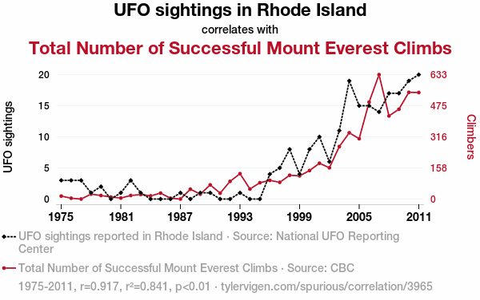
Avistamientos de OVNIs en Rhode Island vs. ascensos exitosos al Everest, 1975–2011 (\(r = 0{,}92\)). Fuente: tylervigen.com/spurious-correlations
Razón 2 Causa común: el confusor
🍦 Ejemplo clásico: las ciudades con más ventas de helado registran más ahogamientos. El helado no causa ahogamientos: el calor —una causa común que no está en el modelo— empuja a ambas variables a la vez.
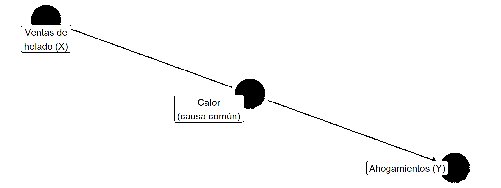
Tip
La correlación helado–ahogamientos existe, pero se desvanece si comparamos días con la misma temperatura. El confusor “abre” un camino entre \(X\) e \(Y\) que no es causal.
Razón 3 — Causalidad inversa / simultaneidad
🚓 ¿Más dotación policial causa más delito? Los datos suelen mostrar esa correlación positiva, pero el sentido de la flecha está en buena parte invertido: las comunas con más delito son, precisamente, las que reciben más policías. Y como la política busca que la dotación reduzca el delito, causa y efecto se determinan mutuamente (simultaneidad).
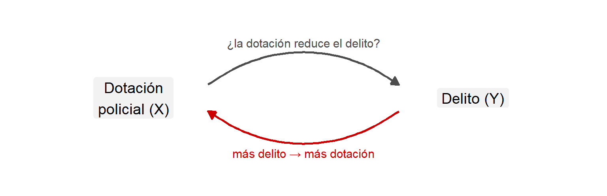
Tip
Cuando \(Y\) también causa a \(X\), el coeficiente de una regresión simple mezcla los dos sentidos y no puede leerse como el efecto de \(X\) sobre \(Y\).
🧠 Pregunta N° 3
Un estudio encuentra una correlación positiva entre el número de bomberos enviados a un incendio y el daño causado por el fuego. ¿Cuál es la explicación más probable?
Seleccione la opción correcta
- Los bomberos causan el daño
- Los incendios más grandes requieren más bomberos y causan más daño
- La correlación es exactamente cero
- Deberíamos usar un R² más alto para resolver el problema
¿Qué falta? Sesgo de variable omitida
En nuestro modelo wage ~ educ, el coeficiente \(\hat{\beta}_1\) probablemente está sesgado porque hay variables omitidas (experiencia, habilidad, sector, etc.) correlacionadas con la educación.
La solución: agregar variables de control al modelo → pasar de regresión simple a regresión múltiple.
Nota
En la Clase 7 agregaremos variables de control para “cerrar” el camino de algunos confusores observables. Aun así, esto no transforma la regresión en un análisis causal: identificar efectos causales de forma creíble excede el alcance de este curso.
Recapitulación
¿Qué aprendimos hoy?
| Concepto | Idea clave |
|---|---|
| Pregunta → Modelo | Definir la pregunta, especificar \(y = \beta_0 + \beta_1 x + u\), estimar |
| OLS | Minimiza la suma de residuos al cuadrado |
| \(\hat{\beta}_1\) | Cambio promedio en \(Y\) por cada unidad de cambio en \(X\) (o en % si hay logaritmos) |
| \(R^2\) | Proporción de variabilidad de \(Y\) explicada por el modelo |
| Gauss-Markov | Si se cumplen los supuestos, OLS es MELI |
| Significancia | p-value < 0.05 o IC que no incluye 0 → rechazamos \(H_0: \beta_1 = 0\) |
| Correlación ≠ Causalidad | Se requiere un contrafactual válido para estimar un efecto causal |
Funciones clave de hoy
Bibliografía
Heiss, Florian. 2020. Using R for Introductory Econometrics. Düsseldorf.
Huntington-Klein, Nick. 2026. The effect: an introduction to research design and causality. Second edition. A Chapman & Hall Book. Boca Raton London New York: CRC Press.
Wooldridge, Jeffrey M. 2020. Introductory econometrics: a modern approach. Seventh edition. Australia Brazil Mexico Singapore United Kingdom United States: Cengage.